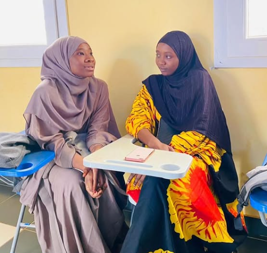

Relvox is a dynamic organization committed to fostering positive change across Niger. We believe in the power of community-driven solutions and innovative approaches to address the challenges facing our region.
Through collaborative partnerships and evidence-based interventions, we work tirelessly to create sustainable impact in education, economic development, and social empowerment. Our vision is a thriving Niger where every individual has the opportunity to reach their full potential.
